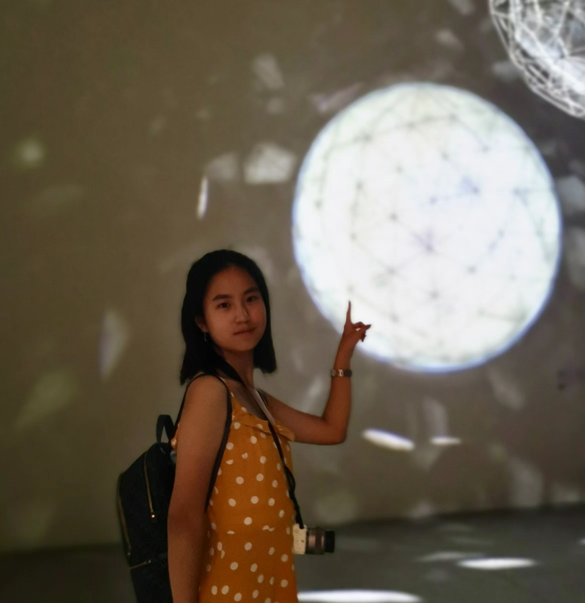

|
Ruohan Zhang
I am a fourth-year undergraduate student majoring in Computer Science and Technology (IEEE Honor class) at Shanghai Jiao Tong University, fortunately advised by Prof. Yanmin Zhu.
My primary and long-term interest focuses on the solution to real-world problems through data-intensive systems.
Email /
Resume /
Google Scholar /
Github
|

|
|
Research
|
|
Disentangled Contrastive Learning for Cross-Domain Recommendation
Ruohan Zhang, Tianzi Zang, Yanmin Zhu, Chunyang Wang, Ke Wang, Jiadi Yu
DASFAA 2023 submitted
|
|
A Survey on Cross-domain Recommendation: Taxonomies, Methods, and Future Directions
Tianzi Zang, Yanmin Zhu, Haobing Liu, Ruohan Zhang, Jiadi Yu
TOIS [paper]
|
|
Dual Disentangled Knowledge Transfer for Cross-Domain Recommendation
Tianzi Zang, Yanmin Zhua, Ruohan Zhang, Chunyang Wang, Ke Wang, Jiadi Yu
TKDD under review
|
|
Contrastive Multi-View Interest Learning for Cross-Domain Sequential Recommendation
Tianzi Zang, Yanmin Zhua, Ruohan Zhang, Chunyang Wang, Ke Wang, Jiadi Yu
TOIS under review
|
|
Explicitly Modeling Relationships between Domain-Specific and Domain-Invariant Interests for Cross-Domain Recommendation
Tianzi Zang, Yanmin Zhua, Ruohan Zhang, Jing Zhu, Feilong Tang
WWW Journal [preprint]
|
|
Internships
|
|
Microsoft, Cloud+AI, DevDiv China
Software Engineer Intern
|
|
Unity, Genesis Test
Software Engineer Intern
|
|
Awards and Scholarships
Shanghai Scholarship (2020) (top 2%)
Google Women Techmakers Scholarship, 2020 (110 out of 2800 in APAC)
COSCO Shipping Scholarship (2021) (top 10%, excellent academic character and achievements)
School Scholarship B Prize at SJTU, 2020-2021 (top 20%)
|
|
Miscellaneous
I love tennis and have been a super fan of Rafael Nadal since I was 10.
Recently I got into fitness and enjoyed the lift weight pretty well.
|
|
{kind=link}